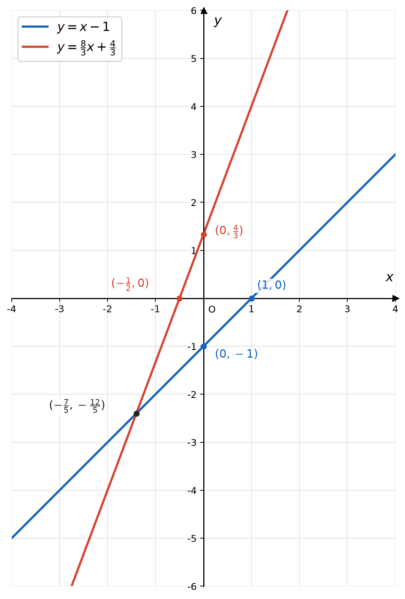
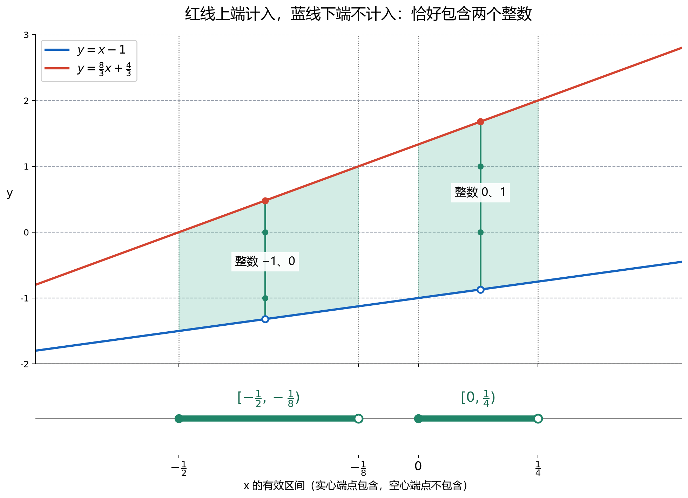

两个一次函数之间
如何恰好包含两个整数？
从一条移动的竖直线出发，把整数计数问题转化成不等式组。
蓝线：L(x) = x − 1
红线：U(x) = 83x + 43
1. 先把题目说清楚
求所有实数 x，使红线的函数值大于蓝线的函数值，并且满足下面条件的整数 n 恰好有两个：
- 下端不含：整数若恰好等于蓝线的纵坐标，不计入。
- 上端包含：整数若恰好等于红线的纵坐标，计入。
- x 可以是实数：要求是纵坐标之间有两个整数，不要求 x 本身为整数，也不要求两端都是整数。
也就是研究半开半闭区间 (L(x), U(x)] 中整数的个数。
2. 用图像理解
固定一个 x，画一条垂直于 x 轴的直线。它与两条函数图像相交，截出一段竖直线段。数一数这段线段经过几条整数高度的水平线，例如 y = −1、y = 0、y = 1。


为什么不能只看两条线的间距？
两条线的纵坐标差为：
它随着 x 增大而增大，但整段线段也在向上移动。整数可以从红色上端进入，也可以从蓝色下端退出。因此，间距增大时，整数个数未必每次都增加。
例如，x = −⅛ 时包含 −1、0、1 三个整数；移动到 x = 0 时，−1 恰好落到不计入的蓝线上，便只剩 0、1 两个整数。
3. 建模：用 k 表示较小的整数
若区间中恰好有两个整数，它们一定连续。设这两个整数为 k、k + 1，其中 k 是整数。
| 目标 | 对应条件 |
|---|---|
| 包含较小的整数 k | L(x) < k |
| 排除前一个整数 k − 1 | k − 1 ≤ L(x) |
| 包含较大的整数 k + 1 | k + 1 ≤ U(x) |
| 排除后一个整数 k + 2 | U(x) < k + 2 |
合并后得到：
k + 1 ≤ U(x) < k + 2
这四个边界同时成立，就保证只包含 k 和 k + 1。
4. 代入函数，得到 x 的两个范围
代入蓝线：
⇒ k ≤ x < k + 1。
代入红线：
⇒ 3k − 1 ≤ 8x < 3k + 2
⇒ 3k − 18 ≤ x < 3k + 28。
同一个 x 必须同时处在这两个范围内，因此要取它们的交集。
5. 为什么 k 只能取 −1 或 0？
两个左闭右开的区间有公共部分，要求每个区间的左端点都小于另一个区间的右端点：
3k − 18 < k + 1。
分别求解：
3k − 1 < 8k + 8 ⇒ k > −95
所以 −95 < k < 25，即 −1.8 < k < 0.4。
这个范围内的整数只有 −1 和 0。注意，这一步确定的是两个整数的组合，还没有直接得到 x 的范围。
6. 求出 k 后，怎样对应到 x？
情况一：k = −1，两个整数为 −1、0
代回第4步的两个范围：
−½ ≤ x < −⅛
取公共部分：−½ ≤ x < −⅛。
情况二：k = 0，两个整数为 0、1
−⅛ ≤ x < ¼
取公共部分：0 ≤ x < ¼。
两个不同的 k 对应两种可能，满足任何一种都可以，因此最后取并集：
即：−½ ≤ x < −⅛，或 0 ≤ x < ¼。
红线在上要求 (5x + 7)/3 > 0，即 x > −7/5。上述两个区间全部满足这一要求；建模条件本身也保证 U(x) > L(x)。
7. 单独检验四个端点
| x | 纵坐标区间 | 计入的整数 | 是否符合 |
|---|---|---|---|
| −½ | (−3/2, 0] | −1、0 | 符合，左端包含 |
| −⅛ | (−9/8, 1] | −1、0、1 | 不符合，右端排除 |
| 0 | (−1, 4/3] | 0、1 | 符合，左端包含 |
| ¼ | (−3/4, 2] | 0、1、2 | 不符合，右端排除 |
其中 −⅛ ≤ x < 0 这一小段有三个整数 −1、0、1，所以答案中间会断开。
8. 练习：恰好包含三个整数
已知两个一次函数：
L(x) = x − 1
U(x) = 8x + 43
要求第二个函数作为较大值边界，第一个函数作为较小值边界。上边界的值可以计入，下边界的值不计入。
求所有实数 x 的取值范围，使满足下列不等式的整数 n 恰好有三个。请写出建模和求解过程，并检查区间端点。
9. 练习答案
第一步：设出三个连续整数
设区间中的三个整数为 k、k + 1、k + 2，其中 k 为整数。包含这三个整数，并排除 k − 1 和 k + 3，需要：
k + 2 ≤ 8x + 43 < k + 3。
第二步：整理 x 的范围
3k + 28 ≤ x < 3k + 58。
第三步：确定 k 的可能值
两个区间有公共部分，需要：
3k + 28 < k + 1 ⇒ k > −65。
因此 −6/5 < k < 1，整数 k 只能取 −1 或 0。
第四步：分别代回，取交集
当 k = −1 时，三个整数为 −1、0、1：
−⅛ ≤ x < ¼
公共范围：−⅛ ≤ x < 0。
当 k = 0 时，三个整数为 0、1、2：
¼ ≤ x < ⅝
公共范围：¼ ≤ x < ⅝。
这两个区间均满足 x > −7/5，因此红线确实在蓝线上方。
第五步：检查端点
| x | 纵坐标区间 | 计入的整数 | 是否符合 |
|---|---|---|---|
| −⅛ | (−9/8, 1] | −1、0、1 | 符合，包含 |
| 0 | (−1, 4/3] | 0、1 | 不符合，排除 |
| ¼ | (−3/4, 2] | 0、1、2 | 符合，包含 |
| ⅝ | (−3/8, 3] | 0、1、2、3 | 不符合，排除 |